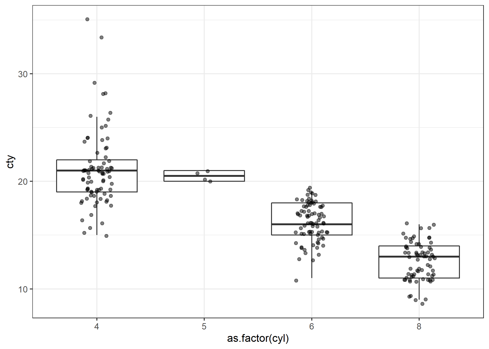
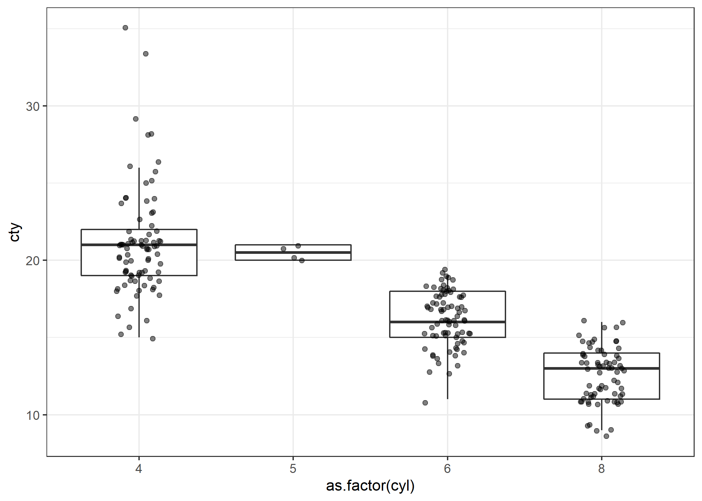

Code
mpg %>%
ggplot(aes(as.factor(cyl), cty)) +
geom_boxplot(outlier.shape = NA) +
geom_jitter(alpha = 0.5, width = 0.15)
Using Quarto again.
Today I played with some of the setup options
mpg %>%
ggplot(aes(as.factor(cyl), cty)) +
geom_boxplot(outlier.shape = NA) +
geom_jitter(alpha = 0.5, width = 0.15)
{monochromeR} is a package to generate custom palettes based on an initial color. You can make progressively lighter or darker palettes, or blend in another color.